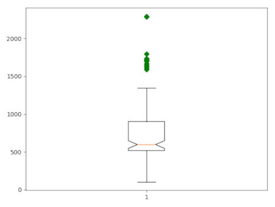
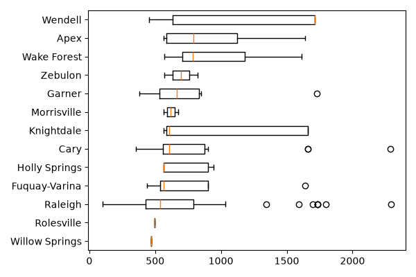

DESCRIPTION
The v.boxplot module draws a boxplot of the values in a vector
map attribute column. Users can use the where option to
select a subset of the attribute table. Values in the column can also be grouped
according to the categories in another column (group_by), creating
separate boxplots for each group.
appearance
Options to customize the appearance of the plot include rotating the plot and
x-axis labels, adding notches, removing outliers, and defining the colors of
various boxplot components. By default, the resulting plot is displayed on the
screen. However, users can save the plot to a file by specifying the desired
width, height, and resolution. The format of the saved file is determined by the
provided file extension. For example, if plot_output = outputfile.png,
the plot will be saved as a PNG file.
Outlier map
Setting outliers_map creates a vector map with only features whose
column value is a boxplot outlier. With group_by, outliers are computed
separately per group. The output keeps the original attributes and adds:
- side: low or high outlier.
- iqr_dist: signed distance beyond the relevant fence, in IQR units.
- n_overlap: number of other groups whose value range contains the outlier.
- GRASSRGB: color string; high outliers are red, low outliers blue. More
exceptional values are darker and more saturated.
The overlap_basis defines the comparison range. With whisker, outliers are
compared with other groups non-outlier range, between fences. With box,
they are only compared with other groups interquartile range, Q1-Q3.
NOTE
The outlier map is created in addition to the plot; both are derived from the
same selection, so the exported outliers always match those shown in the figure.
If the selection contains no outliers, the map is not created and a warning is
issued.
EXAMPLE
Example 1
Use the vector layer schools_wake from the
NC sample
dataset to create boxplots of the core capacity of schools in
Wake County, North Carolina. Use the Where clause to exclude
all records with no data. Use the -o flag to draw outliers.
v.boxplot -n -o map=schools_wake column=CORECAPACI where="CORECAPACI >0"

Figure 1: Boxplot of
core capacity of schools in Wake County.
Example 2
Use the vector layer schools_wake from the NC sample dataset to
create boxplots of the core capacity of the schools in Wake County,
North Carolina, grouped by city. Use the Where clause to
exclude all records with missing data. Use the -o flag to draw
outliers.
v.boxplot -h -o map=schools_wake column=CORECAPACI where="CORECAPACI >0" group_by=ADDRCITY order=ascending

Figure 2: Boxplot of core capacity of schools
in Wake County, grouped by city.
SEE ALSO
v.scatterplot,
v.histogram,
r.boxplot,
r.series.boxplot,
t.rast.boxplot,
r.scatterplot
r3.scatterplot
AUTHOR
Paulo van Breugel, HAS green academy, Innovative
Biomonitoring research group, Climate-robust
Landscapes research group
{kind=link}
{kind=link}